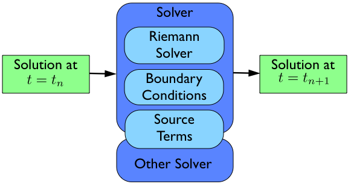

|
Clawpack Documentation : PyClaw Version 5.0 --- Under Construction! Not yet accurate |
Contents
The basic idea of a pyclaw simulation is to construct a Solution object, hand it to a Solver object, and request a solution at a new time. The solver will take whatever steps are necessary to evolve the solution to the requested time.
The bulk of the work in order to run a simulation then is the creation and setup of the appropriate Domain, State, Solution, and Solver objects needed to evolve the solution to the requested time.
A Pyclaw Solution is a container for a collection of Domain and State designed with a view to future support of adaptive mesh refinement and multi-block simulations. The Solution object keeps track of a list of State objects and controls the overall input and output of the entire collection of State objects. Each State object inhabits a Grid, composed of Dimension objects that define the extents of the Domain. Multiple states can inhabit the same grid, but each State inhabits a single grid.
The process needed to create a Solution object then follows from the bottom up.
>>> from pyclaw import Solution, State, Dimension, Domain
>>> x = Dimension('x', -1.0, 1.0, 200)
>>> y = Dimension('y', 0.0, 1.0, 100)
This code creates two dimensions, a dimension x on the interval [-1.0, 1.0] with \(200\) grid points and a dimension y on the interval [0.0, 1.0] with \(100\) grid points.
Note
Many of the attributes of a Dimension object are set automatically so make sure that the values you want are set by default. Please refer to the Dimension classes definition for what the default values are.
Next we have to create a Domain object that will contain our dimensions objects.
>>> grid = Domain([x,y])
>>> num_eqn = 2
>>> state = State(grid,num_eqn)
Here we create a grid with the dimensions we created earlier to make a single 2D Domain object. Then we set the number of equations the State will represent to 2. Finally, we create a State that inhabits this grid. As before, many of the attributes of the Domain and State objects are set automatically.
We now need to set the initial condition q and possibly aux to the correct values.
>>> import numpy as np
>>> sigma = 0.2
>>> omega = np.pi
>>> Y,X = np.meshgrid(state.grid.y.centers,state.grid.x.centers)
>>> r = np.sqrt(X**2 + Y**2)
>>> state.q[0,:] = np.cos(omega * r)
>>> state.q[1,:] = np.exp(-r**2 / sigma**2)
We now have initialized the first entry of q to a cosine function evaluated at the cell centers and the second entry of q to a gaussian, again evaluated at the grid cell centers.
Many Riemann solvers also require information about the problem we are going to run which happen to be grid properties such as the impedence \(Z\) and speed of sound \(c\) for linear acoustics. We can set these values in the problem_data dictionary in one of two ways. The first way is to set them directly as in:
>>> state.problem_data['c'] = 1.0
>>> state.problem_data['Z'] = 0.25
If you’re using a Fortran Riemann solver, these values will automatically get copied to the corresponding variables in the cparam common block of the Riemann solver. This is done in solver.setup(), which calls state.set_cparam().
Last we have to put our State object into a Solution object to complete the process. In this case, since we are not using adaptive mesh refinement or a multi-block algorithm, we do not have multiple grids.
>>> sol = Solution(state,grid)
We now have a solution ready to be evolved in a Solver object.
A Pyclaw Solver can represent many different types of solvers; here we will use a 1D, classic Clawpack type of solver. This solver is defined in the solver module.
First we import the particular solver we want and create it with the default configuration.
>>> from pyclaw import ClawSolver1D, BC
>>> solver = ClawSolver1D()
>>> solver.bc_lower[0] = BC.periodic
>>> solver.bc_upper[0] = BC.periodic
Next we need to tell the solver which Riemann solver to use from the Riemann Solver Package. We can always check what Riemann solvers are available to use via the riemann module. Once we have picked one out, we pass it to the solver via:
>>> from pyclaw import riemann
>>> solver.rp = riemann.rp_acoustics.rp_acoustics_1d
In this case we have decided to use the 1D linear acoustics Riemann solver. You can also set your own solver by importing the module that contains it and setting it directly to the rp attribute of the particular object in the class ClawSolver1D.
>>> import my_rp_module
>>> solver.rp = my_rp_module.my_acoustics_rp
Last we finish up by specifying solver options, if we want to override the defaults. For instance, we might want to specify a particular limiter
>>> from pyclaw import limiters
>>> solver.limiters = limiters.tvd.vanleer
If we wanted to control the simulation we could at this point by issuing the following commands:
>>> solver.evolve_to_time(sol,1.0)
This would evolve our solution sol to t = 1.0 but we are then responsible for all output and other setup considerations.
The Controller coordinates the output and setup of a run with the same parameters as the classic Clawpack. In order to have it control a run, we need only to create the controller, assign it a solver and initial condition, and call the run() method.
>>> from pyclaw.controller import Controller
>>> claw = Controller()
>>> claw.solver = solver
>>> claw.solutions = sol
Here we have imported and created the Controller class, assigned the Solver and Solution.
These next commands setup the type of output the controller will output. The parameters are similar to the ones found in the classic clawpack claw.data format.
>>> claw.output_style = 1
>>> claw.num_output_times = 10
>>> claw.tfinal = 1.0
When we are ready to run the simulation, we can call the run() method. It will then run the simulation and output the appropriate time points. If the keep_copy is set to True the controller will keep a copy of each solution output in memory in the frames array. For instance, you can then immediately plot the solutions output into the frames array.
To restart a simulation, simply initialize a Solution object using an output frame from a previous run; for example, to restart from frame 3
>>> claw.solution = Solution(3, file_format='petsc')
By default, the Controller will number your output frames starting from the frame number used for initializing the Solution object. If you want to change the default behaviour and start counting frames from zero, you will need to pass the keyword argument count_from_zero=True to the solution initializer.
Note
It is necessary to specify the output format (‘petsc’ or ‘ascii’).
If your simulation includes aux variables, you will need to either recompute them or output the aux values at every step, following the instructions below.
To write aux values to disk at the initial time:
>>> claw.write_aux_init = True
To write aux values at every step:
>>> claw.write_aux_always = True
It is sometimes desirable to output quantities other than those in the vector q. To do so, just add a function compute_p to the controller that accepts the state and sets the derived quantities in state.p
>>> def stress(state):
... state.p[0,:,:] = np.exp(state.q[0,:,:]*state.aux[1,:,:]) - 1.
>>> state.mp = 1
>>> claw.compute_p = stress